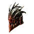

Открыть в интерактивной вики →
| Требуемый уровень | 90 |
|---|---|
| Редкость | Психорар |
| Улучшения | звёзды, орбы, осколки |
| Тип | Шлемы |
| Цена | 6 600 000 |
| Ремонт | 2.64kk |
| Заряды | 3000 |
| Вместимость дрифов | 18 |
| Требуемая сила | 90 |
| Сила | 26 |
| Ловкость | 23 |
| Здоровье | 180 |
| Выносливость | 50 |
| Сопр. рубящим | 35 |
| Сопр. дробящим | 35 |
| Сопр. колющим | 35 |